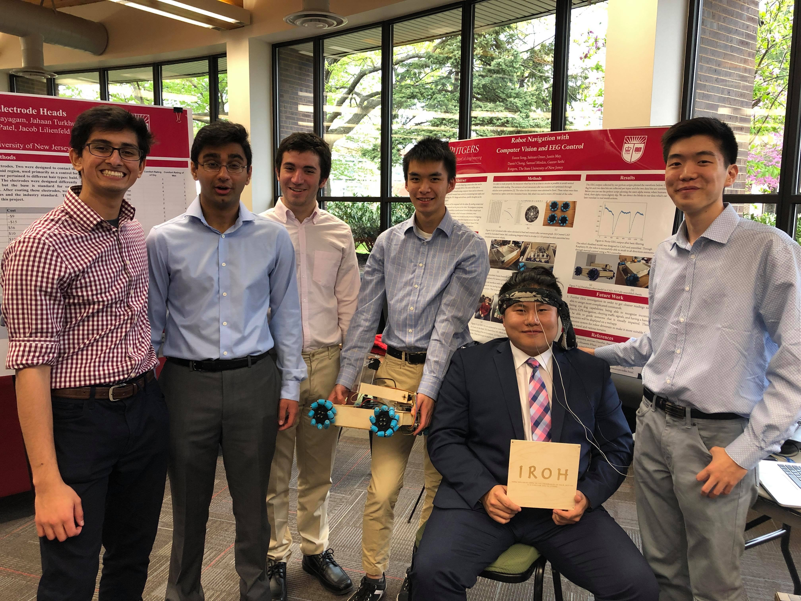

Iroh
A Seeing Eye Robot
What is this thing?
Iroh is a seeing eye robot. Using different sensory and a manueverable drivetrain, Iroh will be able to easily navigate and guide one that is visually impaired from point A to point B. Essentially, it would be able to perform the same tasks as a seeing eye dog.
The project was designed and created by myself and several other engineering students for a design class at our University. I was able to tackle all of the hardware portion of the project with a focus on the drivetrain. After the class ended, I continued to work on the project and am working on hardware improvements while keeping the eventual goal of smart navigation in mind.

Ideation
Iroh was chosen from a selection of ideas that myself and my group members came up with. Ideally, we wanted something that would allow us to challenge ourselves while still utilizing our skillset effectively, while also performing a social good. As I was the only group member with hardware experience, I was given the liberty to decide what the hardware component of the project would consist of. It was important to be able to effectively show off the smart sensory that other group members were developing while being cool on its own.
What I came up with was a seeing eye robot: a robot that would be able to assist someone that is visually impaired with navigation. It requires a lot of important and difficult sensory that we planned to tackle using OpenCV computer vision and an electroencephalograph (EEG) for robot control. Given the time constraints (one semester) and budget (roughly $200), we knew that creating a full working product would not be possible, but we wanted to demonstrate that a robot that could autonomously run without using remote control and also show the potential of a seeing eye robot.

For what could equal the value of a good boy?
How useful could it be?
One of the first steps I took was to determine if a potential seeing eye robot would actually be useful. To do this, I did research into if the performance of seeing eye dogs could be improved upon. While seeing eye dogs are effective, there are several reasons why a seeing eye robot could be useful.
- Currently, seeing eye dogs take very long to train, so it is harder for those with visual impairments to get partners.
- Having a service dog takes a lot of money to raise, buy, and train.
- Seeing eye dogs do not know where they are going; they require commands from their owner to move, such as forward, turn, stop, etc. A seeing eye robot would be able to use some GPS feature such that the person being guided would not need to direct.
Consequently, a robot would be a massive improvement over a dog in terms of cost and time efficiency. Of course, this is only if the robot functioned perfectly, and even then, there are some reasons as to why a dog could be better.
- It is difficult for a robot to have the same intelligence as a dog. Even with sensory, a robot will not be able to sense an environment subjectively. In other words, it does not have a "sixth sense" that a dog has for sensing danger, whether it be from other people or the surrounding environment. Additionally, seeing eye dogs are well established and trusted, while robots have not reached that level of trust.
- Many people will prefer a dog because a dog also provides emotional support as a companion, while a robot is just a tool.
Based on the research, a fully functioning seeing eye robot would not be able to replace seeing eye dogs in society, at least not yet. However, the positives that a robot would bring makes this a venture worth pursuing.
Drivetrain Decision
One of the most important facets of Iroh is that he runs on a holonomic drivetrain. A holonomic drivetrain is one that is able to move in any direction regardless of orientation. In other words, the robot can strafe from side to side and diagonally in addition to normal movement options. This is important for a navigation robot; it should be able to easily manuever around obstacles that it may run into.
Among holonomic drivetrains, three types were considered: omni, mecanum, and swerve.
Among the three, mecanum and swerve were more seriously considered due to their distinct advantages of better outdoor travel. Upon considering cost, time constraints, and build complexity, I decided to go with mecanum drive.
If you want to know more about the swerve drive I was designing, click here.Calculating Mecanum Roller Curvature
In order to reduce costs and learn more about design, I decided to design and build my own mecanum wheels. For this design, it is critical to find the optimal curvature for mecanum wheel rollers. Mecanum wheels consist of two parts: a central wheel, and outer rollers. These parts must combine to form a perfect circle, like any other wheel. If the mecanum wheel is not perfectly circular, there will be noticible vertical deflection while strafing from side to side.
To find the optimal roller curvature, some complex geometry has to be performed. The rollers are positioned at 45 degrees relative to the central wheel. After doing some research, based on the outer radius and radius without the rollers, the height of the roller at a certain distance from the center of the roller(lengthwise) could be determined. These height and distance from the center "pairs" could be found throughout the whole roller to create the full geometry of a roller in CAD.
Using these formulas and desired radius of the wheel(4"), a curve of the mecanum roller can be calculated. Using Excel, based on the distance from the center of the wheel, the thickness of the roller at that point was calculated.
The full excel file can be found here.These tabulated values were then used to create a graph and then imported into Autodesk Fusion 360 as a spline curve.

Using the data points from the excel file, a spline curve in Autodesk Fusion 360 could be generated. This would serve as the contour for the roller.
The curve was then modeled into the roller by revolving it. After shortening the ends and middle to allow for washers, nuts, and screws to fit through, the roller was complete!
Once the roller was created, designing the rest of the wheel went smoothly. The wheel consists of 8 pairs of outer rollers with a central wheel design that can adapt to the desired motor hub.
From the front view, it is clear that the designed roller curvature does make the wheel a perfect circle, which validates the math done previously.
From the CAD, STL files from the rollers and central wheel were generated at printed at the Makerspace at my University.
Torque and Speed Calculations
Due to the limited budget, it was essential to buy the correct motor based on the requirements of the project.
To find the required torque of the wheel motors, consider a robot attempting to climb up an incline. It is subject to the force of gravity, and to move upward it must provide a forward force. This forward force is also equal to the torque of the motors divided by the radius of the wheel, multiplied by the number of wheels. When considering a robot of 25 lbs(11.34 kg), wheel radius of 2"(0.0508 m), incline of 15 degrees, acceleration of 0.2 m/s2, and efficiency of 50%(safety factor, friction), the necessary torque for each motor comes out to be 0.789 N-m.
To find the necessary speed that the motors must travel at, the average walking speed of a person was considered. The robot should be able to at least match that, so it must travel at at least 1.4 m/s. After finding the circumference from the radius, the required speed of the motors must be at least 263.2 rpm.
Full CAD and Construction
Once the wheels were designed, the frame was designed; the full assembly is shown above. The frame is made out of 1/8th inch playwood. The CAD files were saved as a DXF and then laser cut for accuracy. The sizing of the robot allows for the motors to jut inside while leaving a large central area for electronics.

How Does it Move?
The robot is controlled using a Raspberry Pi and L298N motor controllers, and runs on a 12V battery. Additionally, the Raspberry Pi runs on a 5V power bank.
Mecanum wheels can strafe in any direction due to their outer rollers. The rollers are placed at 45 degrees relative to the central wheel. As such, when the wheel moves forward, it produces a x and y force vector. By rotating the wheel in a certain direction and velocity, it is possible to cancel out opposing vectors and make it move side to side. The total force vector of the robot is the sum of the force vectors from all four wheels.
Programming wise, this is simple enough to model by summing up values given in a joystick. A PS3 controller was connected to the Raspberry Pi using bluetooth; the buttons and joysticks were then mapped onto the program in python. One joystick was used for translational movement, and the other joystick was used for rotational movement. This allowed for RC control of Iroh, which was useful for demonstrational purposes.
A link to the full manual control code is given here.
Sharing our Project
At the end of the class, there was a large symposium. We were fortunate enough to be one of two groups that were given the opportunity to present. Afterward, there was an open floor event where everyone was able to show off their projects. It was interesting to see the projects that my friends had come up with, and realize how much I have to improve on.
I Want to Improve
After the semester was over, I wanted to keep working on the project and figure out what I can improve on, as I was dissatisfied with my own skill in design and manufacturing. As such, I made a list of things that I wanted to improve on the robot.
- Unstable Chassis- a lot of torsional flex- can be owed to bad design and need for better construction
- Poor frame design- too many parts
- Sloppy construction on frame- not perfectly level, making wheels unlevel
- Inefficient construction(use laser cutting/machining skills- took way too long to make motor mounts when I could have laser cut
- Bearing hole wobbly/tight- better account for 3D printing tolerances to not waste time and make fit better; superglue bearings that are not properly sized
- Plastidip Mecanum rollers/outdoor movement- testing will be required to see what would be best for dealing with outside movement, and how worn will get over time/bearings getting dirty
- Poor planning for electronics- spacing in electronics box was bad, led to wires getting crushed, falling out, general lack of space
- Better research on electronics setup beforehand- motor controllers were not compatible with GPIO pins bc they supplied 3.3V, servos did not work well with Pi because Pi cannot accurately send pulses like an Arduino or servo hat can
- Better wheel mounting than tetrix hub
- Epoxy servos- servo screws would come loose with repeated use
- Sloppy construction on acrylic case
- Holder cannot hold two tennis balls- poor design, didn’t think enough about how it would work
- Better account for torque calculations
- Predrill holes on bottom plate before attaching- made it difficult to mount and deal with electronics
- Electronics cleanup/planning- spacing was bad, better securing using zip ties
- More research into fuses for batteries
- PS3 controller lag- research Arduino and Pi integration to reduce input time, check code for delays
- Inconsistently working- ultimately a failure because it was not able to work during the presentation demo
- Better wiring understanding- took too long to figure out voltage regulator troubleshooting due to lack of knowledge of circuits
- Better Servo horn screws- came loose easily/no locknuts
- Poor soldering skills- more practice, familiarity with temperatures, flux, solder diameter
- Inefficient to have 2 power sources
- SSH into Pi- learn how to connect to Rutgers Wifi, more familiarity with Github, pushing/pulling
- Better mounting for ultrasonic/camera
- Right joystick inconsistency- would only work sometimes, spend more time doing software troubleshooting
- More complex/creative designing
- Arm misaligned- try to reduce mental lapses
- Design a less bulky arm
- Suspension drivetrain
- Change to not havedirect drive from motors
- Seeing Eye dog capability
- Improved research of what goes into seeing eye dog- look at functions and capabilities currently and how to accomplish that
Keeping these things in mind, I moved forward towards building a better robot with the next iteration.
Suspension
One of the key factors towards improving Iroh is adding a suspension system to the drivetrain. Currently, using a mecanum drivetrain outdoors is difficult, as it is very sensitive to imbalences in the surface it is traveling on. Adding a suspension is essential for smooth travel on sidewalks and roads.
Among the possible drivetrain designed, I analyzed two possibilites: a spring-based suspension and a rocker bogie.
I first started with a rocker bogie design, because it is a simpler and cheaper design. A rocker bogie system, currently used in Mars Exploration rovers(Spirit and Opportunity), is a passive type of suspension. The idea is to have all four wheels on the ground at the same time, which is important for mecanum. The idea is to have a differential system that rotates one side of the robot when the other side is rotated the opposite way. This maintains contact with the ground when one side is lifted up due to an obstacle, such as a rock or bump. Additionally, the body of the robot only rotates half the amount that the ends are lifted up, allowing to be more level.
There are two different types of rocker bogies: a differential gearbox, and a differential bar. Both function similarly, and the first iteration made is using a differential gearbox.
A differential gearbox utilizes bevel gears. Two sides of the robot are hinged on the main body. When one side rotates, due to properties of gears, the other end will rotate the opposite direction.
It works, kind of
After fully assembling the reiterated model, it was good to confirm the viability of the rocker bogie design. The differential worked well; as seen from the image, it is able to keep all wheels on the ground, even while one wheel is elevated by a hex key set (about 4" tall).
There are still several improvements that must be made. One such improvement will be using a differential bar instead of a differential gearbox. The printed gears have a slight tolerance; as such, the main body could slightly wobble on its own even when both sides of the robot were grounded. Changing to a differential bar will hopefully solve the issues with gears.
Additionally, the mecanum wheel rollers will be reprinted in TPU instead of PLA. This will give the rollers more grip on the ground. TPU is also softer, so it will conform better to the ground, allowing for a larger surface area of contact.
This is one of the more important things I am working on right now, so stay tuned for updates!